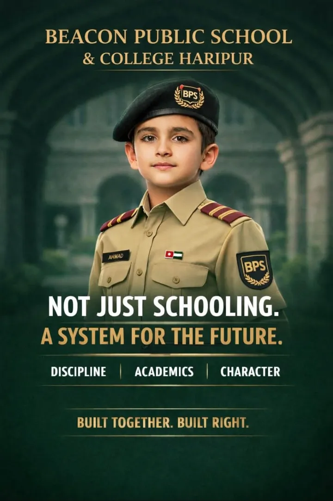

Montessori
Learning through play and activity. The Montessori Campus on Main Shakar Shah Road takes Playgroup to Grade 8.
Home / Academics
Beacon teaches every stage from Playgroup to FSc: Montessori, Primary (Grades 1 to 5), Middle (Grades 6 to 8), Matric (Grades 9 and 10) and FSc. Board exams are with BISE Abbottabad. Since 2026, pre-cadet classes run for Grades 5 to 9.
Discipline · Academics · Character
Alhamdulillah, this year Beacon launched pre-cadet classes from Grade 5 to Grade 9. The programme is for talented, ambitious students who want to grow with discipline, strong academics and character.
"Not just schooling. A system for the future."
Details of the syllabus, timetable, uniform and cadet college test preparation will be added here once confirmed by the school.
Sample: to be confirmed by school
Learning through play and activity. The Montessori Campus on Main Shakar Shah Road takes Playgroup to Grade 8.
Strong foundations in English, Urdu and maths, with digital learning.
Good study habits and science preparation before the board classes.
Focused preparation for the BISE Abbottabad board exams.
Intermediate studies that prepare students for higher education.
Special classes built on discipline, academics and character.
Beacon promotes FSc in its admission notices. The groups offered (for example Pre-Medical, Pre-Engineering) and their subjects will be listed here once confirmed.
Subjects for each group, eligibility (Matric group and marks) and entry test details.
To be provided by the schoolLimited seats, apply early. Visit any campus or message us on WhatsApp.